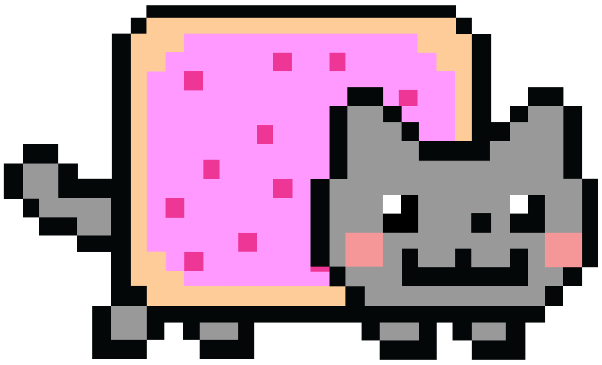

<!-- <!DOCTYPE html>
<script src="../third_party/web-animations-js/web-animations.dev.js"></script>
<script src="../motion-path-polyfill.min.js"></script>

<div id="container">
  <div id="target">
    
  </div>
</div>

<style>
  body {
    margin: 0px;
  }

  #container {
    height: 100px;
    width: 100px;
  }
  #target {
    position: absolute;
  }

</style>

<script>
  var keyframes = [ {offsetPath: 'circle(100px at 500px 500px)', offsetDistance: '0%'},
                    {offsetPath: 'circle(100px at 500px 500px)', offsetDistance: '100%'}];
  var timing = {duration: 20000, iterations: 3};
  target.animate(keyframes, timing);
</script> -->